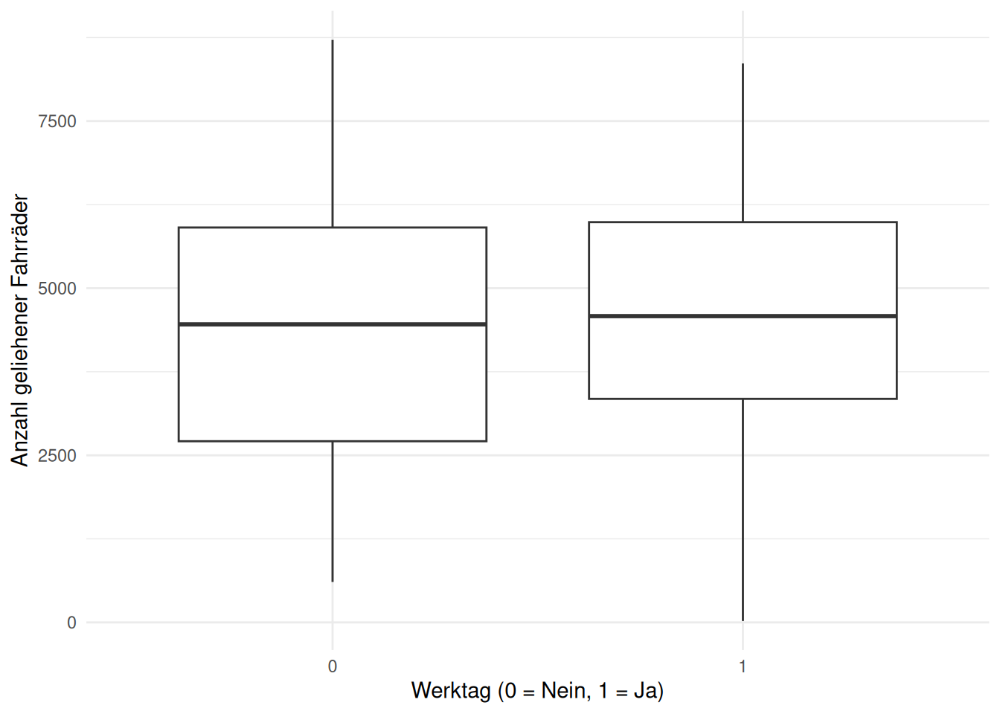
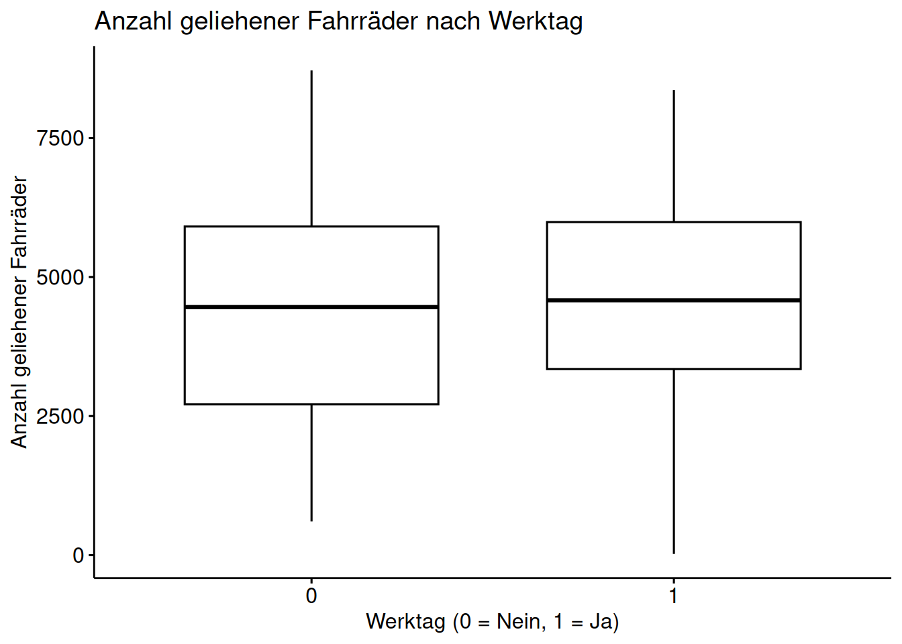
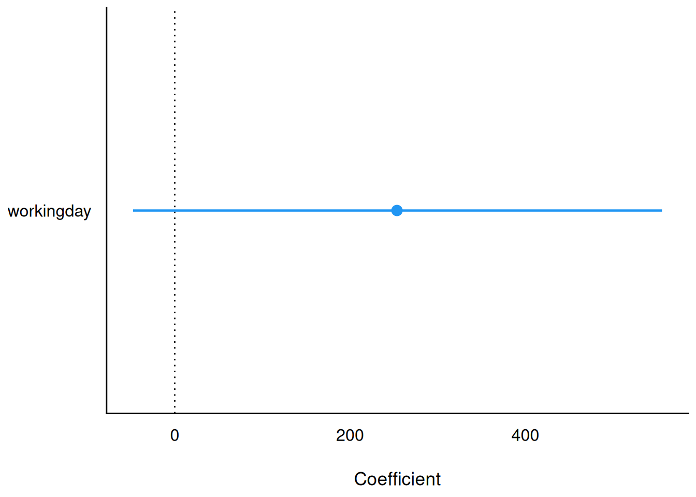
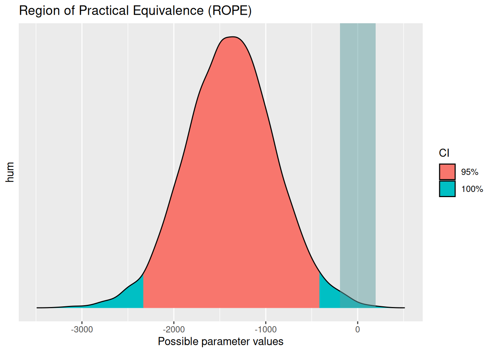
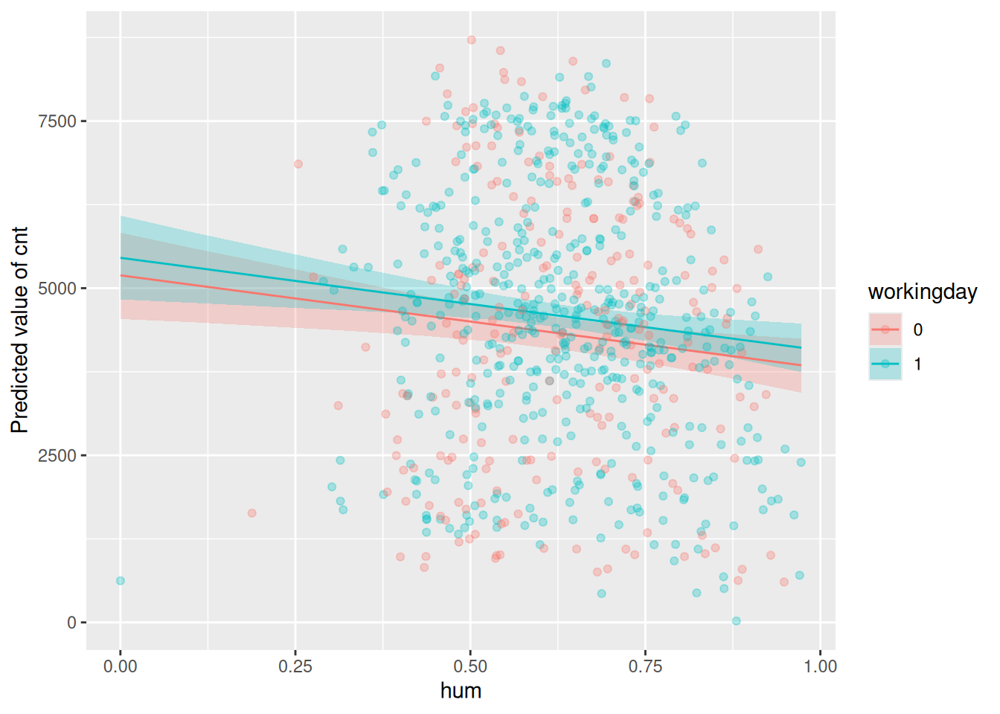
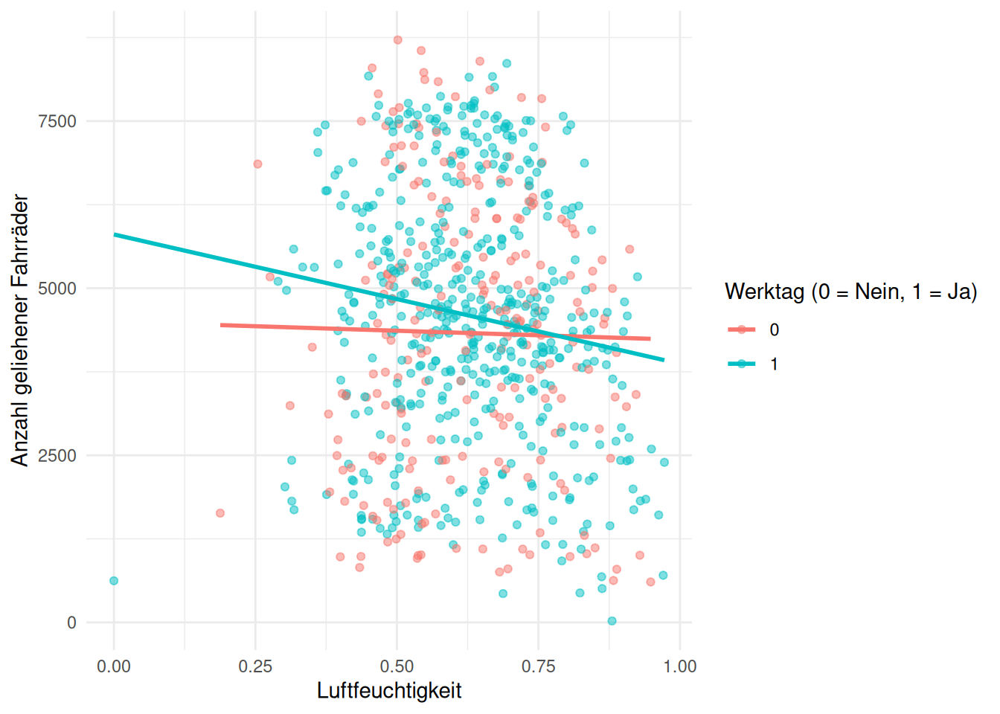

library(tidyverse)
library(rstanarm)
library(easystats)
library(ggpubr) # Visualisierungbike06
regression
bayes
1 Aufgabe
Importieren Sie die Bike-Share-Daten: https://archive.ics.uci.edu/dataset/275/bike+sharing+dataset. Verwenden Sie davon den Datensatz day.
Berechnen Sie das lineare Modell, das die Anzahl der geliehenen Fahrräder auf Basis ob es ein Werktag ist (ja/nein) vorhersagt.
Forschungsfrage:
- AV: Anzahl der geliehenen Fahrräder (
cnt) - UV: Werktag (ja oder nein) (
workingday)
Aufgaben
- Was ist der Punktschätzer des Effekts der UV?
- Was ist die Modellgüte als Anteil der erklärten Varianz des Modells (durch die UV)?
- Ist der Effekt signifikant?
- Interpretieren Sie den Effekt inhaltlich!
- Kann man die Nullhypothese \(H_0\) verwerfen?
Hinweise:
- Beachten Sie die üblichen Hinweise des Datenwerks.
2 Lösung
2.1 Setup
R-Pakete starten:
In dieser Aufgabe geht es un den Bike-Sharing-Datensatz: https://archive.ics.uci.edu/dataset/275/bike+sharing+dataset.
Zuerst Daten von dort herunterladen und in einem geeigneten Ordner speichern.
Dann Daten importieren in RStudio:
library(tidyverse)
day <- read_csv(paste0(here::here(), "/data/bike+sharing+dataset/day.csv")) # Achtung: Das ist der Pfad auf meinem Computer. Passen Sie ggf. den Pfad an Ihren Computer an.Lösung
2.2 A) Punktschätzer des Effekts der UV
Regressionsformel: AV ~ UV
m_wday <- stan_glm(cnt ~ workingday, data = day)
SAMPLING FOR MODEL 'continuous' NOW (CHAIN 1).
Chain 1:
Chain 1: Gradient evaluation took 2.2e-05 seconds
Chain 1: 1000 transitions using 10 leapfrog steps per transition would take 0.22 seconds.
Chain 1: Adjust your expectations accordingly!
Chain 1:
Chain 1:
Chain 1: Iteration: 1 / 2000 [ 0%] (Warmup)
Chain 1: Iteration: 200 / 2000 [ 10%] (Warmup)
Chain 1: Iteration: 400 / 2000 [ 20%] (Warmup)
Chain 1: Iteration: 600 / 2000 [ 30%] (Warmup)
Chain 1: Iteration: 800 / 2000 [ 40%] (Warmup)
Chain 1: Iteration: 1000 / 2000 [ 50%] (Warmup)
Chain 1: Iteration: 1001 / 2000 [ 50%] (Sampling)
Chain 1: Iteration: 1200 / 2000 [ 60%] (Sampling)
Chain 1: Iteration: 1400 / 2000 [ 70%] (Sampling)
Chain 1: Iteration: 1600 / 2000 [ 80%] (Sampling)
Chain 1: Iteration: 1800 / 2000 [ 90%] (Sampling)
Chain 1: Iteration: 2000 / 2000 [100%] (Sampling)
Chain 1:
Chain 1: Elapsed Time: 0.174 seconds (Warm-up)
Chain 1: 0.094 seconds (Sampling)
Chain 1: 0.268 seconds (Total)
Chain 1:
SAMPLING FOR MODEL 'continuous' NOW (CHAIN 2).
Chain 2:
Chain 2: Gradient evaluation took 1.5e-05 seconds
Chain 2: 1000 transitions using 10 leapfrog steps per transition would take 0.15 seconds.
Chain 2: Adjust your expectations accordingly!
Chain 2:
Chain 2:
Chain 2: Iteration: 1 / 2000 [ 0%] (Warmup)
Chain 2: Iteration: 200 / 2000 [ 10%] (Warmup)
Chain 2: Iteration: 400 / 2000 [ 20%] (Warmup)
Chain 2: Iteration: 600 / 2000 [ 30%] (Warmup)
Chain 2: Iteration: 800 / 2000 [ 40%] (Warmup)
Chain 2: Iteration: 1000 / 2000 [ 50%] (Warmup)
Chain 2: Iteration: 1001 / 2000 [ 50%] (Sampling)
Chain 2: Iteration: 1200 / 2000 [ 60%] (Sampling)
Chain 2: Iteration: 1400 / 2000 [ 70%] (Sampling)
Chain 2: Iteration: 1600 / 2000 [ 80%] (Sampling)
Chain 2: Iteration: 1800 / 2000 [ 90%] (Sampling)
Chain 2: Iteration: 2000 / 2000 [100%] (Sampling)
Chain 2:
Chain 2: Elapsed Time: 0.269 seconds (Warm-up)
Chain 2: 0.094 seconds (Sampling)
Chain 2: 0.363 seconds (Total)
Chain 2:
SAMPLING FOR MODEL 'continuous' NOW (CHAIN 3).
Chain 3:
Chain 3: Gradient evaluation took 1.2e-05 seconds
Chain 3: 1000 transitions using 10 leapfrog steps per transition would take 0.12 seconds.
Chain 3: Adjust your expectations accordingly!
Chain 3:
Chain 3:
Chain 3: Iteration: 1 / 2000 [ 0%] (Warmup)
Chain 3: Iteration: 200 / 2000 [ 10%] (Warmup)
Chain 3: Iteration: 400 / 2000 [ 20%] (Warmup)
Chain 3: Iteration: 600 / 2000 [ 30%] (Warmup)
Chain 3: Iteration: 800 / 2000 [ 40%] (Warmup)
Chain 3: Iteration: 1000 / 2000 [ 50%] (Warmup)
Chain 3: Iteration: 1001 / 2000 [ 50%] (Sampling)
Chain 3: Iteration: 1200 / 2000 [ 60%] (Sampling)
Chain 3: Iteration: 1400 / 2000 [ 70%] (Sampling)
Chain 3: Iteration: 1600 / 2000 [ 80%] (Sampling)
Chain 3: Iteration: 1800 / 2000 [ 90%] (Sampling)
Chain 3: Iteration: 2000 / 2000 [100%] (Sampling)
Chain 3:
Chain 3: Elapsed Time: 0.179 seconds (Warm-up)
Chain 3: 0.097 seconds (Sampling)
Chain 3: 0.276 seconds (Total)
Chain 3:
SAMPLING FOR MODEL 'continuous' NOW (CHAIN 4).
Chain 4:
Chain 4: Gradient evaluation took 1.2e-05 seconds
Chain 4: 1000 transitions using 10 leapfrog steps per transition would take 0.12 seconds.
Chain 4: Adjust your expectations accordingly!
Chain 4:
Chain 4:
Chain 4: Iteration: 1 / 2000 [ 0%] (Warmup)
Chain 4: Iteration: 200 / 2000 [ 10%] (Warmup)
Chain 4: Iteration: 400 / 2000 [ 20%] (Warmup)
Chain 4: Iteration: 600 / 2000 [ 30%] (Warmup)
Chain 4: Iteration: 800 / 2000 [ 40%] (Warmup)
Chain 4: Iteration: 1000 / 2000 [ 50%] (Warmup)
Chain 4: Iteration: 1001 / 2000 [ 50%] (Sampling)
Chain 4: Iteration: 1200 / 2000 [ 60%] (Sampling)
Chain 4: Iteration: 1400 / 2000 [ 70%] (Sampling)
Chain 4: Iteration: 1600 / 2000 [ 80%] (Sampling)
Chain 4: Iteration: 1800 / 2000 [ 90%] (Sampling)
Chain 4: Iteration: 2000 / 2000 [100%] (Sampling)
Chain 4:
Chain 4: Elapsed Time: 0.571 seconds (Warm-up)
Chain 4: 0.113 seconds (Sampling)
Chain 4: 0.684 seconds (Total)
Chain 4: Parameter des Modells anschauen:
parameters(m_wday)| Parameter | Median | CI | CI_low | CI_high | pd | Rhat | ESS | Prior_Distribution | Prior_Location | Prior_Scale |
|---|---|---|---|---|---|---|---|---|---|---|
| (Intercept) | 4325.2708 | 0.95 | 4076.51871 | 4583.2234 | 1.0000 | 0.9999912 | 4055.882 | normal | 4504.349 | 4843.029 |
| workingday | 253.5825 | 0.95 | -47.55649 | 555.9367 | 0.9515 | 0.9998061 | 3856.691 | normal | 0.000 | 10409.891 |
Der Punktschätzer des Effekts der UV ist ca. 250. Der Punktschätzer des IEffekts der UV ist 254.
So bekommt man auch die Regressionskoeffizienten:
coef(m_wday)(Intercept) workingday
4325.2708 253.5825 2.3 B ) Modellgüte
Die Modellgüte berechnen wir hier mit \(R^2\):
r2(m_wday)# Bayesian R2 with Compatibility Interval
Conditional R2: 0.004 (95% CI [5.860e-10, 0.015])Das Modell erklärt wie viel Prozent der Varianz in der AV durch die UV?
- 0.4%
Also sehr wenig. Der Werktag-Effekt ist sehr klein.
2.4 C) Signifikant? Nein.
die Null ist im Intervall enthalten, daher ist der Effekt NICHT signifikant.
2.5 D) Interpretation des Effekts
Der Effekt der UV workingday auf die AV cnt ist sehr klein und nicht signifikant.
Das bedeutet, dass es keinen nennenswerten Unterschied in der Anzahl der geliehenen Fahrräder zwischen Werktagen und Nicht-Werktagen gibt.
ggplot(day, aes(x = as.factor(workingday), y = cnt)) +
geom_boxplot() +
labs(x = "Werktag (0 = Nein, 1 = Ja)", y = "Anzahl geliehener Fahrräder") +
theme_minimal()
ggboxplot(day, x = "workingday", y = "cnt",
xlab = "Werktag (0 = Nein, 1 = Ja)",
ylab = "Anzahl geliehener Fahrräder",
title = "Anzahl geliehener Fahrräder nach Werktag")
parameters(m_wday) |> plot()
2.6 E) Nullhypothese verwerfen?
Nein, die Nullhypothese kann nicht verworfen werden, da die Null im Bereich plausibler Werte (des Effekts der UV, d.i. das 95% CI) enthalten ist.
3 Aufgabe 2: Effekt von workingday und humidity auf cnt
Berechnen Sie ein multiples Regressionsmodell, das die Anzahl der geliehenen Fahrräder (cnt) auf Basis dob es ein Werktag ist (ja/nein) (workingday) und der Luftfeuchtigkeit (hum) vorhersagt.
- Nennen Sie die Regressionsformel
- Nennen Sie die Breite des 95%-Konfidenzintervalls des Effekts der UV
hum(ETI) - Ist der Effekt von Luftfeuchtigkeit signifikant?
- Können wir die Rope-Hypothese verwerfen (± 300 Räder sind sind gerade noch vernachlässigbar).
3.1 A) Regressionsformel
cnt ~ workingday + humidity
Dazu das Modell berechnen:
m_wday_hum <- stan_glm(cnt ~ hum + workingday, data = day, refresh = 0, seed = 42)3.2 B) Breite des 95%-Konfidenzintervalls des Effekts der UV humidity (ETI)
parameters(m_wday_hum)| Parameter | Median | CI | CI_low | CI_high | pd | Rhat | ESS | Prior_Distribution | Prior_Location | Prior_Scale |
|---|---|---|---|---|---|---|---|---|---|---|
| (Intercept) | 5192.2188 | 0.95 | 4538.92863 | 5828.5634 | 1.00000 | 0.9998781 | 5261.804 | normal | 4504.349 | 4843.029 |
| hum | -1380.0002 | 0.95 | -2334.85417 | -418.7852 | 0.99800 | 0.9995747 | 5455.543 | normal | 0.000 | 34003.085 |
| workingday | 259.9066 | 0.95 | -18.54882 | 552.6148 | 0.96525 | 1.0002255 | 4952.819 | normal | 0.000 | 10409.891 |
Die Breite berechnet sich als OG minus UG:
breite <- -375.38 - -2401.38
breite[1] 2026Die Breite des 95%-Konfidenzintervalls des Effekts der UV humidity beträgt 2026.
3.3 C) Ist der Effekt von Luftfeuchtigkeit signifikant?
Hier ist noch mal das 95%-Konfidenzintervall des Effekts der UV hum:
[-2401.38, -375.38]
Wie man sieht, ist die Null NICHT enthalten. Daher ist der Effekt von hum signifikant.
3.4 D) Rope-Hypothese verwerfen?
rope(m_wday_hum, rope = c(-300, 300), parameters = "hum") |> plot()
rope(m_wday_hum, rope = c(-300, 300), parameters = "hum")| Parameter | CI | ROPE_low | ROPE_high | ROPE_Percentage | Effects | Component |
|---|---|---|---|---|---|---|
| hum | 0.95 | -193.7211 | 193.7211 | 0 | fixed | conditional |
JA, die ROPE-Hypothese kann verworfen werden, da das komplette CI (der “rote Bereich der Post-Verteilung”) außerhalb der ROPE liegt.
4 Aufgabe 3: Interaktionseffekt zwischen workingday und humidity auf cnt
Visualisieren Sie das Modell mit den beiden UV workingday und humidity, aber OHNE Interaktionseffekt.
m_wday_hum |> estimate_relation() |> plot() +
geom_point(data = day, aes(x = hum, y = cnt, color = as.factor(workingday)), alpha = 0.3) 
Aufgabe
- Berechnen Sie das Modell mit Interaktionseffekt zwischen
workingdayundhumidity. Geben Sie den Punktschätzer des Interaktionseffekts an. - Visualisieren Sie das Modell mit Interaktionseffekt zwischen
workingdayundhumidity. - Interpretieren Sie den Interaktionseffekt inhaltlich.
4.1 A) Berechnen Sie das Modell mit Interaktionseffekt zwischen workingday und humidity.
Regressionsformel:
cnt ~ hum + workingday + hum:workingday
m_wday_hum_int <- stan_glm(cnt ~ hum + workingday + hum:workingday, data = day, refresh = 0, seed = 42)Punktschätzer des Interaktionseffekts:
parameters(m_wday_hum_int)| Parameter | Median | CI | CI_low | CI_high | pd | Rhat | ESS | Prior_Distribution | Prior_Location | Prior_Scale |
|---|---|---|---|---|---|---|---|---|---|---|
| (Intercept) | 4468.7297 | 0.95 | 3401.66916 | 5615.8508 | 1.00000 | 1.001036 | 1223.375 | normal | 4504.349 | 4843.029 |
| hum | -232.9443 | 0.95 | -2005.44333 | 1431.7241 | 0.60025 | 1.000949 | 1245.009 | normal | 0.000 | 34003.085 |
| workingday | 1310.3101 | 0.95 | -21.14374 | 2711.9522 | 0.97250 | 1.000523 | 1097.217 | normal | 0.000 | 10409.891 |
| hum:workingday | -1670.1521 | 0.95 | -3835.65003 | 406.3614 | 0.93750 | 1.000600 | 1083.852 | normal | 0.000 | 15344.292 |
Antwort: Der Punktschätzer des Interaktionseffekts beträgt -1670.15.
4.2 B) Visualisieren Sie das Modell mit Interaktionseffekt zwischen workingday und humidity.
ggplot(day, aes(x = hum, y = cnt, color = as.factor(workingday))) +
geom_point(alpha = 0.5) +
geom_smooth(method = "lm", se = FALSE) +
labs(x = "Luftfeuchtigkeit", y = "Anzahl geliehener Fahrräder", color = "Werktag (0 = Nein, 1 = Ja)") +
theme_minimal()
4.3 C) Interpretieren Sie den Interaktionseffekt inhaltlich.
cnt_predicted = 4517 * - 1373 * hum + 1266 * workingday + -1603 * hum*workingday
Das ist der Unterschied in den Steigungen pro Einheit in der UV zwischen den Gruppen.